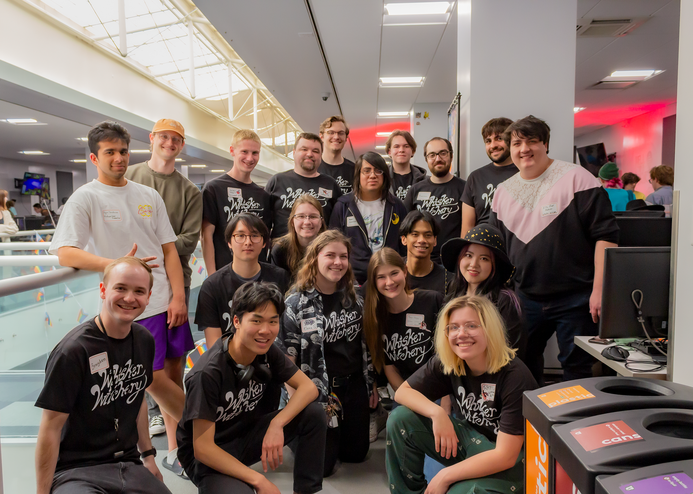
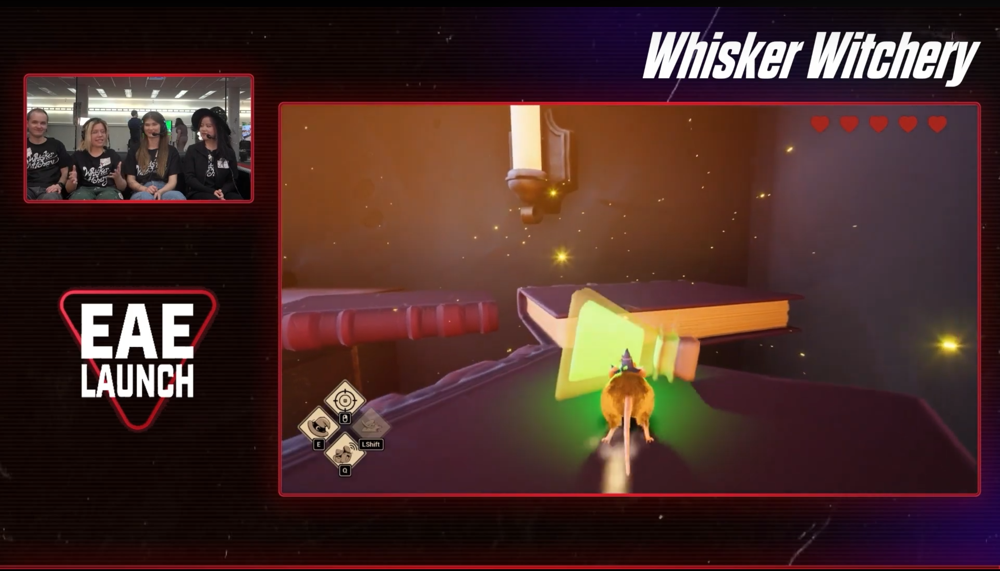
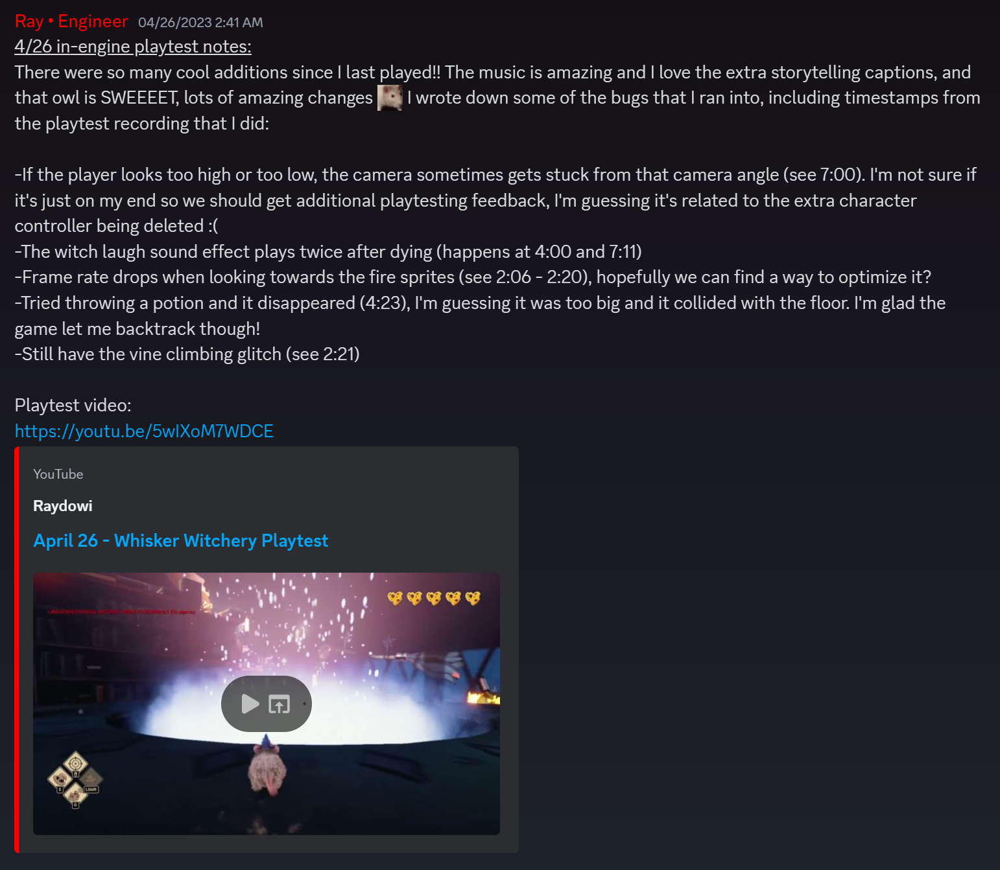
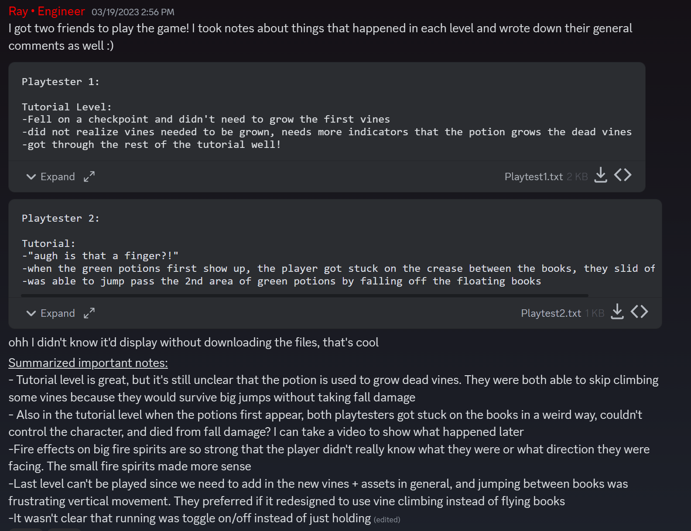
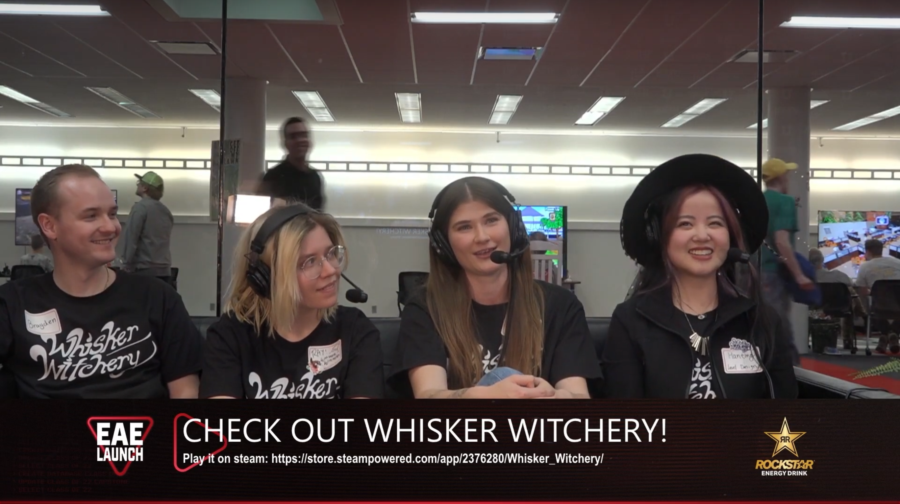
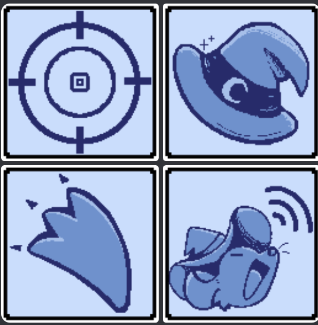
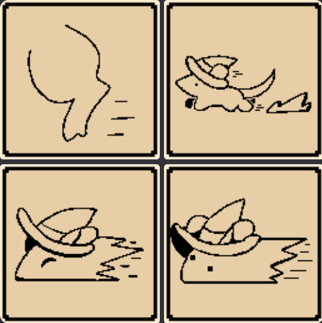
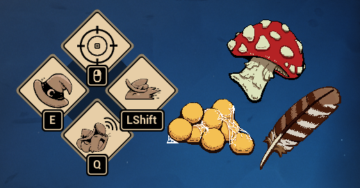

Whisker Witchery hit #2 on the New & Trending Free Games page after launch, and has since earned 46,000+ downloads with a Very Positive rating on Steam!
30
2023
Software Engineering
Designed one of the core gameplay loops — growing vines with magical potions and climbing to a goal — and collaborated in engineering the required mechanics.
Implemented timed storybook sequences using media players and transitioned them between gameplay sequences.
Created a tracking system for the player's collected potion ingredients, which prevents player progression without collecting essential interactable objects.
Iterated and developed the checkpoint and respawn systems.
Collaborated with engineers to integrate and understand essential mechanics so we can effectively communicate their usage to the design team.
Miscellaneous bug fixing and mechanic iterations throughout the scope of the project.
Contributed to several presentations throughout the game's pipeline: the initial game idea pitches, milestone presentations, and speaking at promotional events and streams.
Organized different types of playtests, recorded points of interest (i.e. positive feedback, bugs, constructive criticism), and shared them with the user research team. Usually included extra feedback such as gameplay recordings or playtester writeups.
Created a case study document for Whisker Witchery's technical development to analyze development issues, solutions, and takeaways to improve production for future games and multidisciplinary projects.
Collaborated frequently with the QA team to identify and fix issues.





UI/UX Design
Drafted thumbnails for UI/UX features and iterated on them to create screen and HUD layouts.
Designed, illustrated, and programmed an introductory scroll sequence to communicate the player's objectives.
Created most of the UI icons, including the control buttons for the gameplay HUD and icons for the interactable ingredients.
First Iteration - Created aim, hide, sprint, and squeak buttons
Second Iteration - Drafted several new sprint buttons and experimented with new background colors; settled on bottom-left design
Last Iteration - Finalized previous buttons, changed color schemes, and refactored sprint icon



2D Art & Promo
Created and pitched the one-sheet idea document, including the initial game idea and concept illustrations.
Collaborated with other 2D artists to organize and create the storybook sequences and style guide.
Created lineart for the storybook introduction, and collaborated with other 2D artists to create final storybook illustrations.
Illustrated promotional materials to advertise our social media accounts and important milestones, such as early access announcements and social media banners.